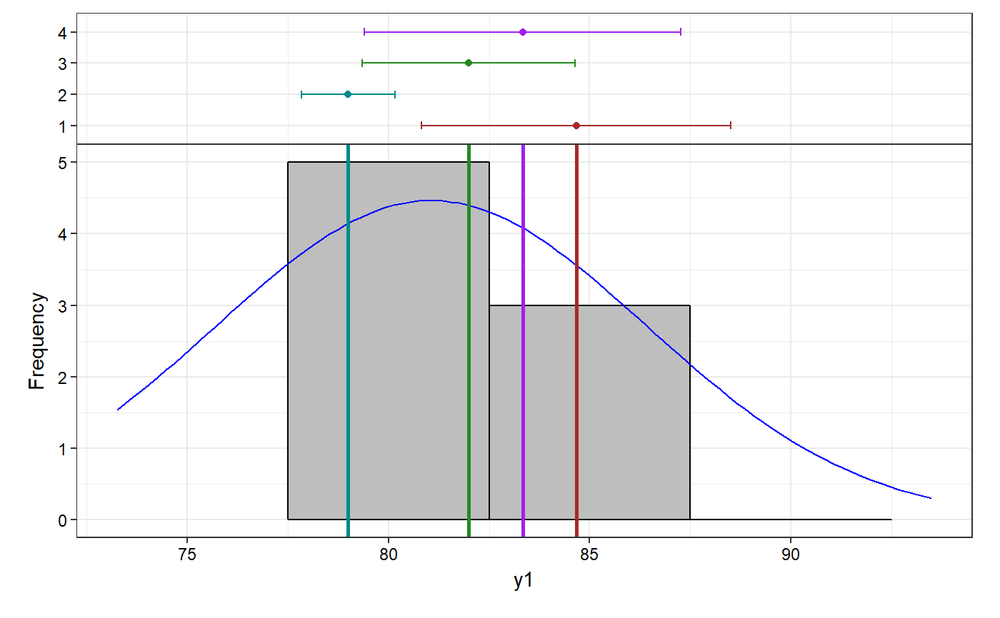
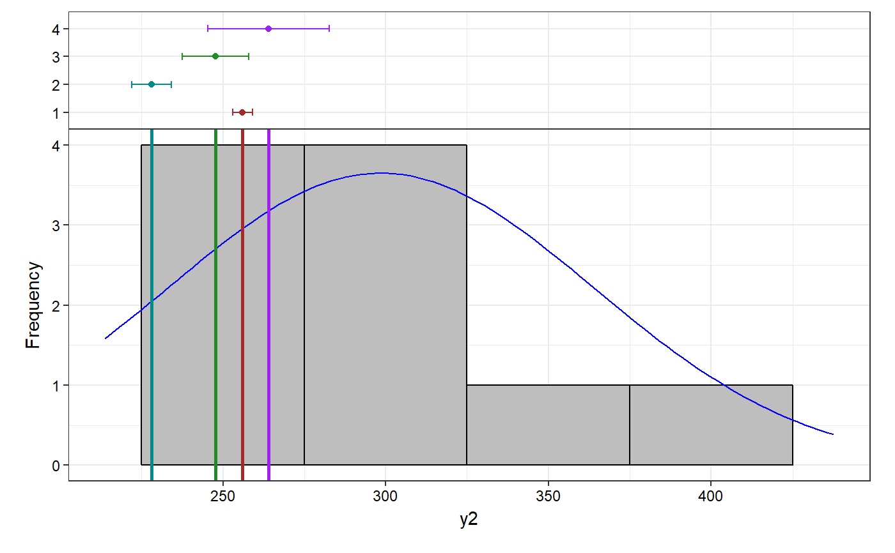
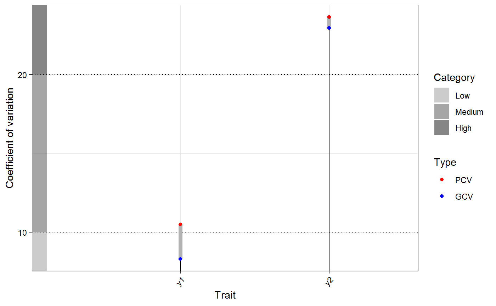
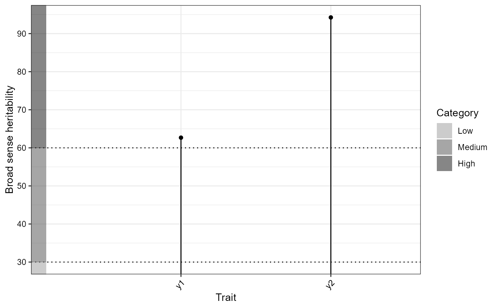
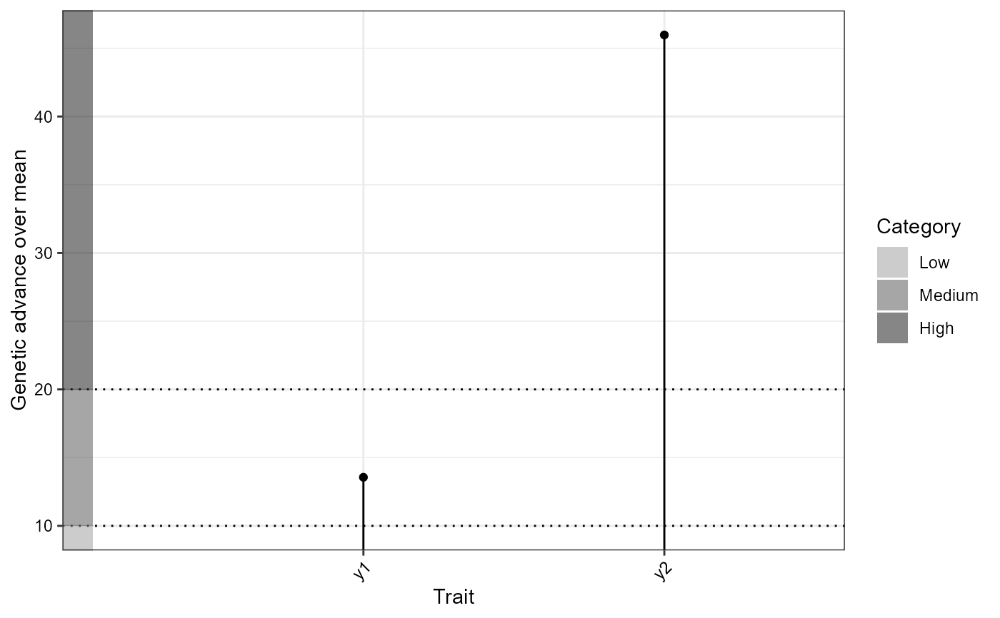

R/augmentedRCBD.bulk.R
augmentedRCBD.bulk.RdaugmentedRCBD.bulk is a wrapper around the functions
augmentedRCBD, describe.augmentedRCBD,
freqdist.augmentedRCBD and gva.augmentedRCBD. It will carry out
these analyses for multiple traits/characters from the input data as a data
frame object.
augmentedRCBD.bulk( data, block, treatment, traits, checks = NULL, alpha = 0.05, describe = TRUE, freqdist = TRUE, gva = TRUE, check.col = "red", console = TRUE )
| data | The data as a data frame object. The data frame should possess columns specifying the block, treatment and multiple traits/characters. |
|---|---|
| block | Name of column specifying the blocks in the design as a character string. |
| treatment | Name of column specifying the treatments as a character string. |
| traits | Name of columns specifying the multiple traits/characters as a character vector. |
| checks | Character vector of the checks present in |
| alpha | Type I error probability (Significance level) to be used for multiple comparisons. |
| describe | If |
| freqdist | If |
| gva | If |
| check.col | The colour(s) to be used to highlight check values in the
plot as a character vector. Must be valid colour values in R (named
colours, hexadecimal representation, index of colours [ |
| console | If |
A list of class augmentedRCBD.bulk containing the following
components:
DetailsDetails of the augmented design used and the traits/characters.
ANOVA, Treatment AdjustedA data frame of mean sum of squares of the specified traits from treatment adjusted ANOVA.
ANOVA, Block AdjustedA data frame of mean sum of squares of the specified traits from block adjusted ANOVA
MeansA data frame of the adjusted means of the treatments for the specified traits.
alphaType I error probability (Significance level) used.
Std. ErrorsA data frame of standard error of difference between various combinations for the specified traits.
CDA data frame of critical difference (at the specified alpha) between various combinations for the specified traits.
Overall adjusted meanA data frame of the overall adjusted mean for the specified traits.
CVA data frame of the coefficient of variance for the specified traits.
Descriptive
statisticsA data frame of descriptive statistics for the specified traits.
Frequency distributionA list of ggplot2 plot grobs of the frequency distribution plots.
Genetic variability
analysisA data frame of genetic variability statistics for the specified traits.
GVA plotsA list of three ggplot2 objects with the plots for (a) Phenotypic and Genotypic CV, (b) Broad sense heritability and (c) Genetic advance over mean
warningsA list of warning messages (if any) captured during model fitting and frequency distribution plotting.
In this case treatment comparisons/grouping by least significant
difference or Tukey's honest significant difference method is not computed.
Also the output object size is reduced using the simplify = TRUE
argument in the augmentedRCBD function.
# Example data blk <- c(rep(1,7),rep(2,6),rep(3,7)) trt <- c(1, 2, 3, 4, 7, 11, 12, 1, 2, 3, 4, 5, 9, 1, 2, 3, 4, 8, 6, 10) y1 <- c(92, 79, 87, 81, 96, 89, 82, 79, 81, 81, 91, 79, 78, 83, 77, 78, 78, 70, 75, 74) y2 <- c(258, 224, 238, 278, 347, 300, 289, 260, 220, 237, 227, 281, 311, 250, 240, 268, 287, 226, 395, 450) dataf <- data.frame(blk, trt, y1, y2) bout <- augmentedRCBD.bulk(data = dataf, block = "blk", treatment = "trt", traits = c("y1", "y2"), checks = NULL, alpha = 0.05, describe = TRUE, freqdist = TRUE, gva = TRUE, check.col = c("brown", "darkcyan", "forestgreen", "purple"), console = TRUE)#> #> ANOVA for y1 computed (1/2) #> #> ANOVA for y2 computed (2/2) #> #> Augmented Design Details #> ======================== #> #> Number of blocks "3" #> Number of treatments "12" #> Number of check treatments "4" #> Number of test treatments "8" #> Check treatments "1, 2, 3, 4" #> Number of traits "2" #> Traits "y1, y2" #> #> ANOVA, Treatment Adjusted #> ========================= #> Source Df y1 y2 #> 1 Block (ignoring Treatments) 2 180.04 * 3509.67 ** #> 2 Treatment (eliminating Blocks) 11 25.92 ns 5360.49 ** #> 3 Treatment: Check 3 17.64 ns 716.75 ns #> 4 Treatment: Test and Test vs. Check 8 29.02 ns 7101.89 ** #> 5 Residuals 6 26.97 286.25 #> #> ANOVA, Block Adjusted #> ===================== #> Source Df y1 y2 #> 1 Treatment (ignoring Blocks) 11 52.33 ns 5882.5 ** #> 2 Treatment: Check 3 17.64 ns 716.75 ns #> 3 Treatment: Test vs. Check 1 16.87 ns 27694.41 ** #> 4 Treatment: Test 7 72.27 ns 4980.41 ** #> 5 Block (eliminating Treatments) 2 34.75 ns 638.58 ns #> 6 Residuals 6 26.97 286.25 #> #> Coefficient of Variation #> ======================== #> Trait CV #> 1 y1 6.37 #> 2 y2 6.06 #> #> #> Overall Adjusted Mean #> ===================== #> Trait Overall.adjusted.mean #> 1 y1 81.06 #> 2 y2 298.48 #> #> #> Standard Errors #> =================== #> Comparison y1 y2 #> 1 A Test Treatment and a Control Treatment 6.7 21.84 #> 2 Control Treatment Means 4.24 13.81 #> 3 Two Test Treatments (Different Blocks) 8.21 26.75 #> 4 Two Test Treatments (Same Block) 7.34 23.93 #> #> #> Critical Difference #> =================== #> alpha = 0.05 Comparison y1 y2 #> 1 A Test Treatment and a Control Treatment 16.41 53.45 #> 2 Control Treatment Means 10.38 33.8 #> 3 Two Test Treatments (Different Blocks) 20.09 65.46 #> 4 Two Test Treatments (Same Block) 17.97 58.55 #> #> #> Descriptive Statistics #> =================== #> Trait Count Mean Std.Error Std.Deviation Min Max Skewness Kurtosis #> 1 y1 12 81.06 1.55 5.36 73.25 93.5 0.93 ns 3.52 ns #> 2 y2 12 298.48 18.92 65.55 213.67 437.67 0.74 ns 2.79 ns #> #> #> Genetic Variability Analysis #> =================== #> Trait Mean PV GV EV GCV GCV.category PCV PCV.category #> 1 y1 81.06 72.27 45.3 26.97 8.3 Low 10.49 Medium #> 2 y2 298.48 4980.41 4694.16 286.25 22.95 High 23.64 High #> ECV hBS hBS.category GA GAM GAM.category #> 1 6.41 62.68 High 10.99 13.56 Medium #> 2 5.67 94.25 High 137.22 45.97 High #> #> #> Warning Messages #> =================== #> y1 #> Removed 2 rows containing missing values (geom_bar). #> y2 #> Removed 2 rows containing missing values (geom_bar). #> #> Treatment Means #> =============== #> Treatment y1 y2 #> 1 1 84.67 256 #> 2 10 77.25 437.67 #> 3 11 86.5 299.42 #> 4 12 79.5 288.42 #> 5 2 79 228 #> 6 3 82 247.67 #> 7 4 83.33 264 #> 8 5 78.25 293.92 #> 9 6 78.25 382.67 #> 10 7 93.5 346.42 #> 11 8 73.25 213.67 #> 12 9 77.25 323.92#> $y1 #> NULL #> #> $y2 #> NULL #># GVA plots bout$`GVA plots`#> $`Phenotypic and Genotypic CV`#> #> $`Broad sense heritability`#> #> $`Genetic advance over mean`#>